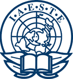

IAESTE ile yurtdışı staj ve Erasmus ile öğrenci değişimi
October 2, 2011
Üniversitede son seneniz ve öğrenci değişim programları ile yurtdışında tecrübe edinme şansınızı kaçırdınız mı? Yurt dışı deneyim için Erasmus tek alternatif değil, teknik bir bölümde okuyorsanız IAESTE aracılığı ile yurtdışında daha kısa bir zaman diliminde daha çok teknik, kültürel ve sosyal deneyim edinme şansınız devam ediyor.
IAESTE (International Association for the Exchange of the Students for Technical Experience), özellikle teknik bir alanda eğitim gören üniversite öğrencilerine yurtdışında staj imkanı sağlayan bir staj değişim organizasyonu. Bu yazıda kısaca Erasmus programı ve IAESTE staj programlarını dikkatimi çeken başlıklar altında karşılaştırdım. Yurtdışında staj yapmış ve Erasmus programı ile yurtdışına gitmemiş birisi olarak bu değerlendirmemin ne derece objektif olabileceği tartışılır ancak yine de görüşlerimi paylaşmak istedim.
İklim
Uluslararası değişim programlarında tercih edilen ülkeler genellikle Türkiye'ye göre daha soğuk ülkeler. Erasmus programı ile bahar döneminde gidecek olsanız bile soğuk bir iklimle karşılaşmanız olası. Staj programları yaz döneminde olduğundan havanın gezmeye daha elverişli olması önemli bir avantaj.
Sosyal Çevre
Üniversitedeki sosyal çevreyi stajda bulamayacağınızı düşünebilirsiniz ancak IAESTE öğrenci komitesi gittiğiniz ülkede sizi yalnız bırakmıyor. Staj boyunca üniversite yurtlarında çeşitli ülkelerden gelmiş stajyerlerle birlikte kalınıyor. Haftasonları farklı şehirlerde gittiğiniz ülke ve çevre ülkelerdeki stajyerlerin katıldığı çeşitli etkinlikler düzenleniyor. Kısacası sosyal çevre olarak IAESTE stajlarının Erasmus programından geri kalır yanının olmadığını söyleyebilirim.
Maddi İmkan
Stajyerlere staj süresince gidilen ülkedeki temel ihtiyaçlarını karşılayacak kadar maaş veriliyor. Gözlemlediğim kadarıyla maaşlar Erasmus programında verilen hibe miktarları ile aşağı yukarı aynı seviyede. (Genelde aylık 250 - 650 Euro arası)
Yıllar sonrasından not: eğer para kazanmak istiyorsanız Amerika'daki stajlara başvurun. Herhangi bir aracı kuruma ihtiyacınız olmadan internetten başvurabilirsiniz. Büyük şirketlerdeki stajyer mühendis maaşları saati 30 - 65 dolar arası. Ayrıca çoğu şirket ücretsiz konaklama veya kira desteği de sağlıyor.
Okul Durumu
Staj programının bir diğer avantajı da okul ve dersler ile ilgili bir kaygınızın olmaması. Hatta zorunlu stajlarınızı da önceden tamamladıysanız staj defteri yazma veya staj saydırma gibi bir kaygınız da olmadan yazın keyfini çıkarabilirsiniz.
Tecrübe
Stajda edinilebilecek tecrübe staj yapılan kurum ve kişinin kendi çabasına bağlı. Şahsen benim stajım teknik açıdan da oldukça verimli geçti. Staj süresince verilen projeleri zamanından önce tamamladım. Çalışanlar problem çözmede oldukça yetenekliydi ve takıldığım noktalarda oldukça yardımcı oldular.
Farkındayım biraz yanlı bir karşılaştırma oldu ama birçok konuda yurtdışı staj programını öğrenci değişim programlarına göre daha avantajlı buluyorum. Siz bu konuda ne düşünüyorsunuz? Erasmus veya IAESTE deneyimlerinizi yorum olarak paylaşmaktan çekinmeyin. :)
Yurtdışı eğitim, Yurtdışı staj, En çok okunan yazılar